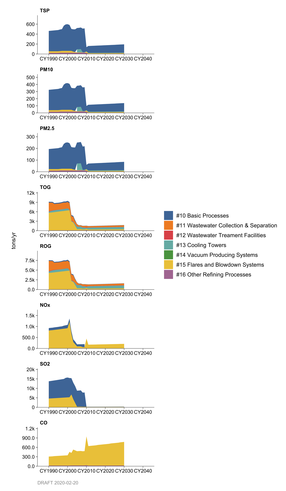
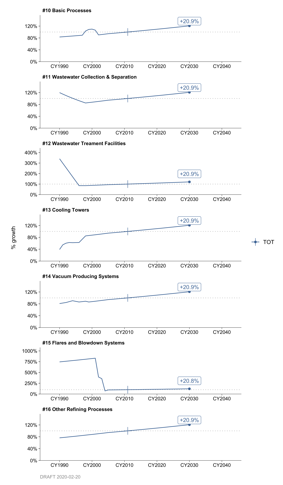
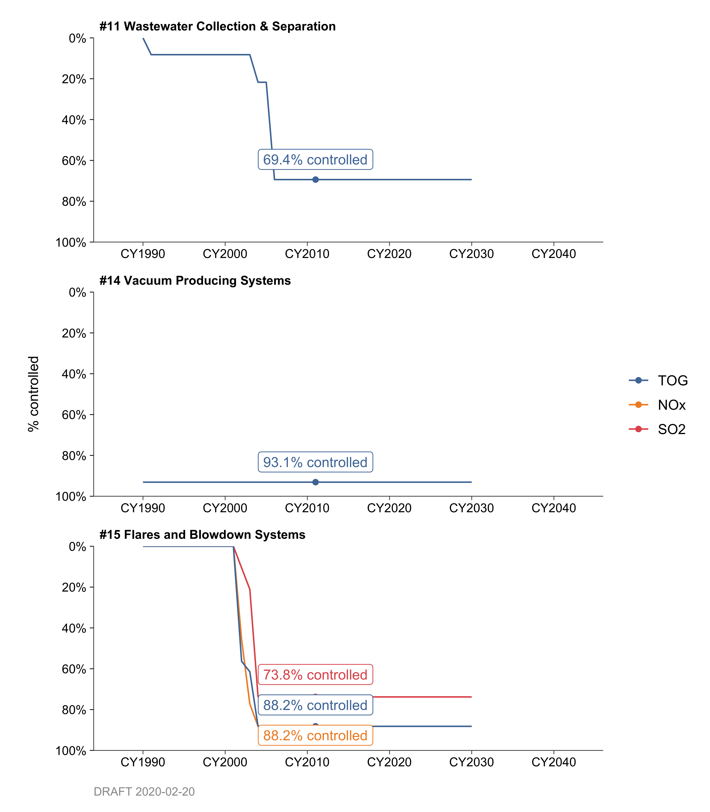
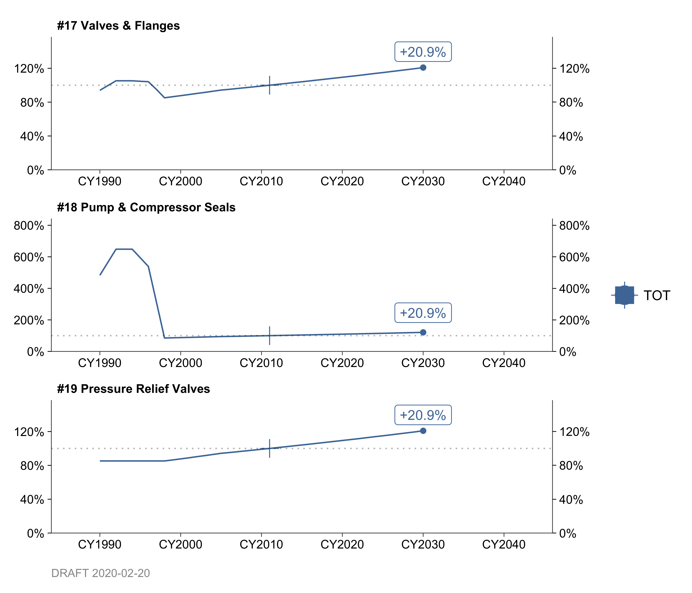
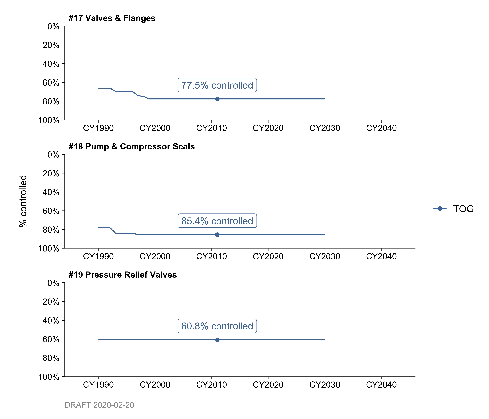
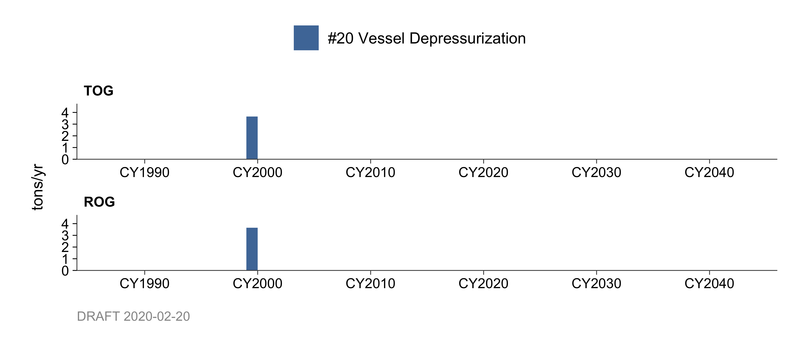
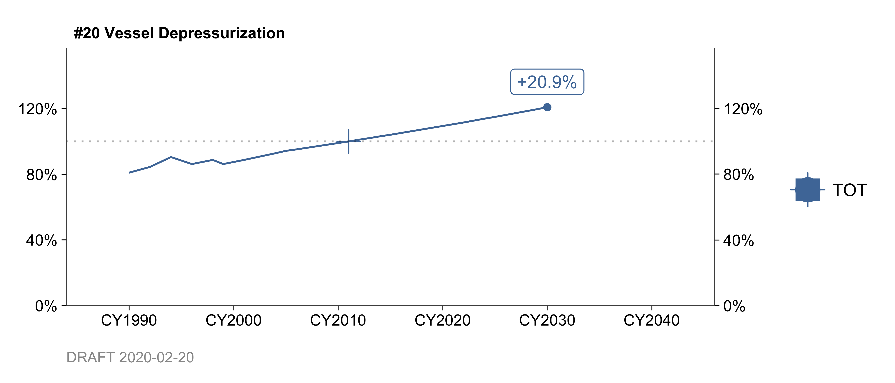
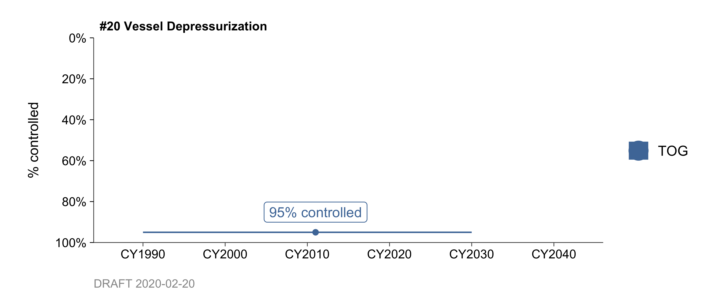

Chapter 2 Petroleum Refining Facilities
2.1 General Refinery Emissions
- Basic Refining Processes (10)
- Wastewater Collection & Separation Systems (11)
- Wastewater Treatment Facilities (12)
- Cooling Towers (13)
- Vacuum Producing Systems (14)
- Flares and Blowdown Systems (15)
- Other Refining Processes (16)
2.1.1 Emissions
Introduction
Petroleum refining involves processing crude oil into consumable products such as fuel gas, lube oil, and grease. To achieve this process, an array of equipment is used to refine crude oil; the emissions that are generated as a byproduct from these processes make up the petroleum refining emissions categories. Emissions reported are those generated via basic refining processes/devices and do not include emissions from refinery fugitives, storage units, and combustion processes (other than flares and blow down systems). These non-included sources are accounted for in other categories of the emission inventory report.
Category 10 accounts for emissions from refining processes that involve chemical reactions, such as, but not limited to cracking, polymerization, and reforming. Significant amounts of nitrogen oxide (NOx), sulfur oxide (SOx), carbon monoxide (CO), and particulate (PM) emissions are produced during catalytic cracking and coking operations.
Category 11 includes all permitted refinery oil/water separation equipment and fugitive emissions from process drains. This category also contains units such as clarifiers and dissolved air flotation systems.
Category 12 accounts for emissions from treatment of wastewater at oil refineries.
Category 13 contains emissions from cooling systems. Emissions from cooling towers consist of fugitive VOC’s and dissolved gases (such as hydrogen sulfide and ammonia) which are leaked through heat exchangers into cooling water. The contaminants are then vaporized into the atmosphere at the cooling tower.
Category 14 includes emissions from vacuum producing systems. Vacuum systems are used primarily to distill heavy crude residues which cannot be distilled at atmospheric pressure.
Category 15 accounts for all refinery process gas (combustion) emissions from flares and blow down systems. Refinery flares can emit large quantities of organics, sulfur dioxide and carbon monoxide as well as greenhouse gases.
Category 16 includes emissions from all other refinery processes not covered in category 15. Emissions of organic compounds and greenhouse gases from storage tanks, sulfur recovery units, and combustion processes are shown in sections REF, REF, and REF respectively. The processes in this category include distillation, hydrogen manufacturing plants, fuel blending. Coke loading and storage facilities account for most of the particulate emissions in this category.
Methodologies
Emissions for these categories are obtained from point source data in the District’s record keeping system (Data Bank). Emissions are updated annually, on a source-by-source basis, using the following inputs:
Process material throughputs as reported by the refineries (this data is routinely updated)
Emissions factors (these may be source specific as reported by refineries or general factors, i.e. from the EPA)
Emissions control factors (device-specific or general - these may be supplied by refineries also)
Emission information from numerous sources is grouped into the above mentioned categories. EPA’s AP-42, Chapter 5 contains description of petroleum refining processes and emission factors. Criteria pollutants and greenhouse gas emissions, including carbon dioxide (CO2), methane (CH4), and nitrous oxide (N2O), are produced during refining processes. Since refinery emissions are part of point sources, criteria pollutants as well as greenhouse gas data are obtained from the refinery plant as part of the Bay Area Air District permit renewal process.
The county fraction and monthly/daily factors are calculated based on data obtained from the Data Bank.
2.1.2 Trends
History

Historic emissions have generally varied with refinery throughputs. Past base year historical emissions include interchangeable emission reduction credit (IERC). IERC banking emissions are now inventoried separately under categories 298-301. Also, flare source emissions from categories 298 and 299 are now accounted for in category 15. Beginning in December 2003, flare emission monitoring control was implemented for all refineries in the Bay Area. Flare emissions are based upon these monitoring data.
In 2010, SOx decreased significantly as a result of an abatement device installation at Valero refinery. Over 90% of SOx emissions were reduced at Valero refinery from prior years.
Growth

Projected growth for all refinery related categories was taken from the California Energy Commission report on California’s Petroleum Infrastructure (2011) that predicted California refiners expand distillation capacity to remain relatively flat. This is due to increase in fuel efficiency of vehicles from CAFÉ standards as well as steady transition to alternative fuels in the California market. California refiners have recently added and will continue to add more process units to produce reformulated gasoline. However, no large increases in emissions are expected.
Future flare emissions are difficult to predict, since they are predicated on emergencies and the nature of emergencies which are unknown and unpredictable. However, with the recent passage of refinery flare monitoring and flare minimization plan requirements, flare emissions are expected to remain constant as long as there are no large upset in refinery processes that would warrant increase in flaring activities.
Control

Refinery emissions are regulated by the District. Regulation 6, 7, 8, and 9 regulate Particulate Matter, Odorous Substances, Organic Compounds, and Inorganic Gaseous Pollutants respectably.
Regulation 12, Rule 11 and 12 pertain to flare monitoring and flare minimization plan at Petroleum Refineries. The rule does not mandate reductions. District staff has found that because refiners have looked more closely both at monitoring and the feasibility of flaring reductions, flaring activities at the five Bay Area refineries have dropped dramatically over the past years. The result has been a significant emission reduction that cannot be directly attributed to this rule, but has and will ultimately be reflected in the emissions.
By: Tan Dinh Date: December 2013 Base Year: 2011
2.2 Refinery Fugitive Emissions
2.2.1 Emissions
Introduction
Categories 17, 18, and 19 contain refinery fugitive emissions from sealed equipment. These emissions are treated as point sources and are unique to each refinery. Emissions occur from process equipment whenever components such as valves, flanges, pumps, compressors, and pressure relief valves (PRVs) leak due to seal failure. These emissions generally occur randomly and are difficult to predict occurrences.
Valve and flange leaks account for the bulk of total fugitive emissions while pressure relief valves account for the smallest amount of total fugitive emissions.
Methodologies
The petroleum refineries are periodically surveyed for the number of mechanical components utilized in an oil refining process. These components include valves, PRVs, pumps, and compressor seals. Individual types of components are summed up and emissions are calculated based on throughputs and specific emission factors.
Emission information from numerous sources is grouped into the above mentioned categories. EPA’s AP-42, Chapter 5 contains description of petroleum refining processes and emission factors. Criteria pollutant, mainly total organic compounds, and greenhouse gas emissions, including carbon dioxide (CO2), methane (CH4), and nitrous oxide (N2O) are produced during refining processes. Since refinery emissions are part of point sources, criteria pollutants as well as greenhouse gas data are obtained from the refinery plant as part of the Bay Area Air District annual permit renewal process.
The county, month, and day factors are obtained from information collected in the District’s data bank. Information such as plant’s location, seasonal usage, and days per week of operation are also stored in the data bank.
2.2.2 Trends
History

Historical changes in fugitive emissions in the Bay Area have been due to installation of newer process units that supplement rather than replace old process units.
Growth

It is expected that fugitive emissions will not increase significantly in future after new units are built to produce reformulated gasoline.
Control

The District adopted control regulations in 1980 for valves and flanges, pump and compressor seals and PRVs. This marked the first step in the control of fugitive emissions. Control for valves vary widely, gas PRVs are 95% controlled, while heavy liquid valves have negligible control. Most common and significant emission sources are the light liquid service valves, and they are controlled by 65 to 72%.
In 1997 and 1998, the District combined the three previous regulations 8-18, 8-25, and 8- 28, into a single regulation, Equipment Leaks, # 8-18. Regulation 8-25 was deleted. Regulation 8-28 was changed to focus on episodic emissions from the normal operation of pressure relief valves.
During this change the leak standard for only the pressure relief valves was reduced from 10,000 parts per million (ppm) to 500 ppm of total organic compounds. In addition, applicability of the new Regulation 8-18 was broadened to include all leaking equipment, not just valves, flanges, and other equipment specifically listed in the earlier regulation. The following table summarizes the limits.
FIXME: TABLE OMITTED
By: Tan Dinh Date: January 2014 Base Year: 2011
2.3 Refinery Process Vessel Depressurization
2.3.1 Emissions
Introduction
Emissions for this category are generated from depressurization of process vessels at petroleum refineries. Generally a standard procedure requires repeated purging of the process vessel with inert gasses to reduce the concentration of organic vapors to below 300 PPM, before venting a vessel to the atmosphere.
Methodology
These emissions are from point sources data reported annually. The District updates the data each year on a source-by-source basis using as input:
Process material throughputs as reported annually by the refineries.
Emissions factors (these may be source specific factors reported by the companies through source test results or applicable general factors, i.e. from the EPA).
Emissions control factors (device-specific or general - these may be supplied by the companies also).
Greenhouse gas emission factors are also provided by the individual refineries and/or taken from EPA. Emissions for greenhouse gases including CO2, CH4, and N2O are reported by the refinery during the District’s annual permit renewal process.
The county, month, and day factors are obtained from the data bank’s information on each plant’s location, seasonal usage, and days per week of operation.
2.3.2 Trends
History

Emissions for category 20 have been relatively insignificant for last few years, at less than 5 pounds per day for the entire region.
Growth

Projected growth for this category is based on the throughput of marine operations.
Control

The District adopted Regulation 8, Rule 10 on July 20, 1983. Overall control afforded by this rule is estimated to be 95%.
By: Tan Dinh Date: January 2014 Base Year: 2011